System Configuration - NetScaler 12 / Citrix ADC 12.1
Navigation
- Change Log
- VPX Virtual Hardware - VMXNET3
- Customer User Experience Improvement Program (CUXIP)
- Welcome Wizard
- Licensing:
- 100% CPU
- Upgrade Firmware
- High Availability
- Networking
- DNS Servers
- NTP Servers
- Syslog Server
- SNMP Configuration
- Call Home
- Change nsroot password
- TCP, HTTP, SSL, and Security settings
- Management Authentication - LDAP
- CLI Prompt
- Backup and Restore
:idea: = Recently Updated
Change Log
- 2020 Jan 24 – Firmware – added link to CTX267027 CVE-2019-19781 – Vulnerability in Citrix Application Delivery Controller, Citrix Gateway, and Citrix SD-WAN WANOP appliance
- 2019 Mar 5 - Management Authentication - Two Factor - new section
- 2019 Feb 4 - Upgrade Firmware - added link to Citrix CTX241500 Citrix ADC Firmware Release Cycle
- 2018 Nov 1- VPX Virtual Hardware - added link to Magnus Andersson Deploy Citrix ADC VPX On Nutanix AHV
- 2018 Oct 7 - Call Home - Citrix ADC 12.1 build 49 release notes: CallHome is now enhanced to send Citrix ADC usage metrics to Citrix Insight Services (CIS) periodically
- 2018 Oct 6 - VPX Hardware - 12.1 supports ESXi 6.7 - 12.0 does not support ESXi 6.7
- 12.1 supports vMotion - 12.0 does not support vMotion
- 2018 Sep 27 - updated many screenshots for 12.1
- 2018 Aug 1 - Dedicated Management Network - added link to Citrix Blog Post Separating NetScaler Management and Data Traffic for DISA STIGs which also uses Policy Based Routing
- 2018 Mar 13 - in Firmware Upgrade section, added MAS upgrade method detailed at Creating Maintenance Tasks at Citrix Docs
- 2018 Mar 13 - in Security Settings section, added link to CTP George Spiers How to secure management access to NetScaler and create unique certificates in a highly available setup
- 2018 Feb 8 - in TCP Settings section, added info from Citrix CTX232321 Recommended TCP Profile Settings for Full Tunnel VPN/ICAProxy from NetScaler Gateway 11.1 Onwards
- 2017 Dec 6 - in Dedicated Mgmt section, added config for floating mgmt IP
VPX Virtual Hardware
Magnus Andersson Deploy Citrix ADC VPX On Nutanix AHV
VMware Compatibility (source = Support matrix for 12.1 and Support matrix for 12.0 at Citrix Docs)
- Citrix ADC 12.1 build 49 and newer are supported on ESXi 6.7. NetScaler VPX 12.0 is not supported on ESXi 6.7.
- NetScaler VPX 12 is not supported on ESXi 5.5.
- NetScaler VPX 12 is the first version to support ESXi 6.5.
Citrix ADC 12.1 with E1000 or VMXNET3 supports vMotion. NetScaler 12.0 does not support any form of vMotion.
NetScaler ADC VPX supports changing the NIC type to VMXNET3 or SR-IOV. The imported appliance comes with E1000 NICs, so you'll have to remove all of the existing virtual NICs, and add new VMXNET3 NICs.
- Citrix CTX224576 NetScaler VPX Loses Network Connectivity Intermittently on VMware ESXi After Upgrading to Version 12.0 recommends VMXNET3 as a workaround to network connectivity issues in recent 11.0, 11.1, and 12.0 builds.
- If you choose to use VMXNET3 instead of E1000, make sure all of the NICs are VMXNET3. You cannot mix NIC types.
- If you already licensed your appliance, jot down the E1000 MAC address, and configure the new VMXNET3 NIC with the same MAC address.
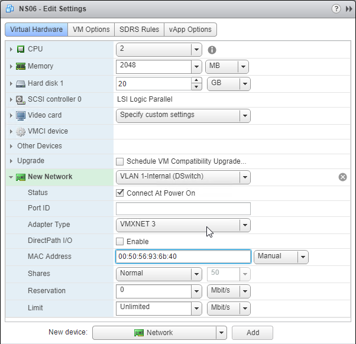
Auto-Provision IP Address
When importing VPX into a hypervisor, you can use VM advanced configuration parameters to set the NSIP. See CTX128250 How to Auto-Provision NetScaler VPX Appliance on a VMware ESX or ESXi Host, and CTX128236 How To Auto-Provision NetScaler VPX on XenServer.
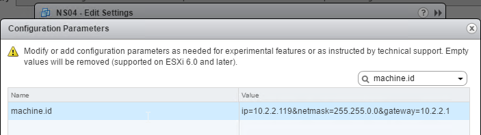
Power On VPX and configure NSIP
- After swapping out the NICs to VMXNET3, power on the NetScaler ADC VPX appliance.
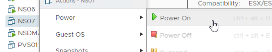
- Configure the management IP from the VM's console.
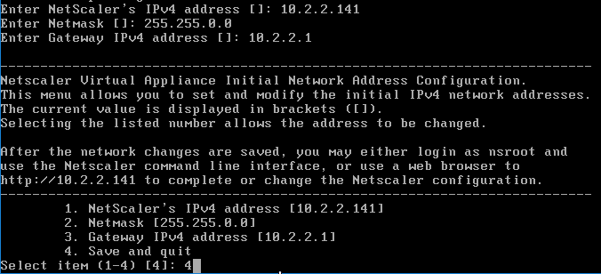
- Then point your browser to the management IP using either http or https and login as nsroot with password nsroot.
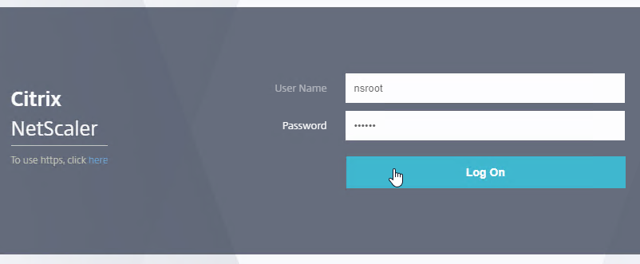
Customer User Experience Improvement Program
- You might be prompted to enable the Customer User Experience Improvement Program. Either click Enable, or click Skip.
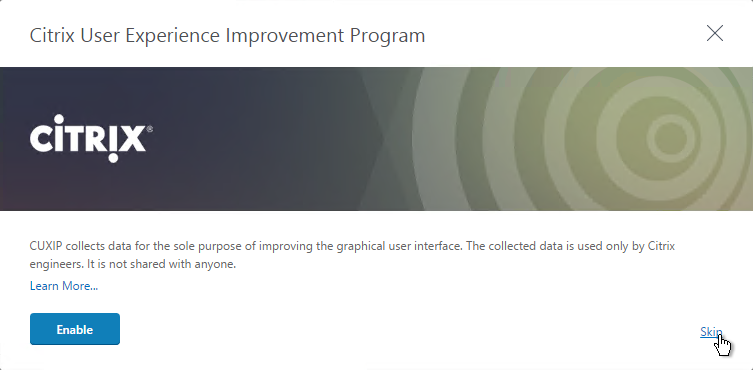
- You can also enable or disable the Customer Experience Improvement Program by going to System > Settings.
- On the right is Change CUXIP Settings.
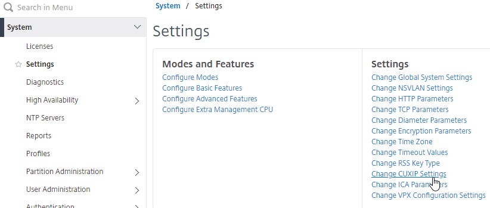
- Make your selection and click OK.
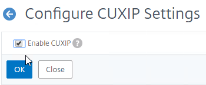
- See ../delivery-controller-cr-and-licensing/#ceip for additional places where CEIP is enabled.
Welcome Wizard
NetScaler ADC has a Welcome! Wizard that lets you set the NSIP, hostname, DNS, licensing, etc. It appears automatically the first time you login.
- Click the Subnet IP Address box.
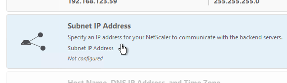
-
You can either enter a SNIP for one of your production interfaces, or you can click Do it later and add SNIPs later after you configure Port Channels and VLANs. Note: If you have a dedicated management network, to prevent it from being used for outgoing traffic, don't put a SNIP on it.
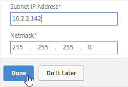
-
Click the Host Name, DNS IP Address, and Time Zone box.
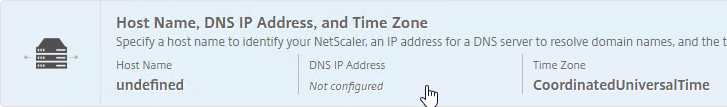
- Enter a hostname. In a High Availability pair each node can have a different hostname. You typically create a DNS record that resolves the hostname to the NSIP (management IP).
- Enter one or more DNS Server IP addresses. Use the plus icon on the right to add more servers.
- Change the time zone to GMT-06:00-CST-America/Chicago or similar.
-
Click Done.
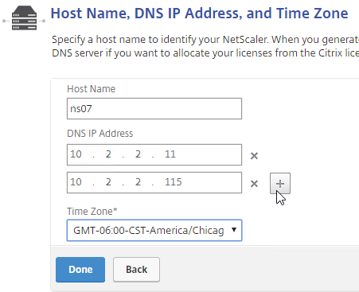
-
Click Yes to save and reboot.
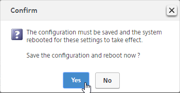
- Click the Licenses box.
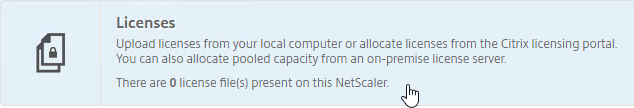
- On the far right side of the screen, you'll see the Host ID. You'll need this to allocate your licenses at citrix.com. See below for detailed instructions on how to allocate the license to this Host ID.
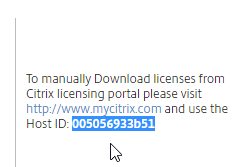
- On the left, select Upload license files, and click Browse.
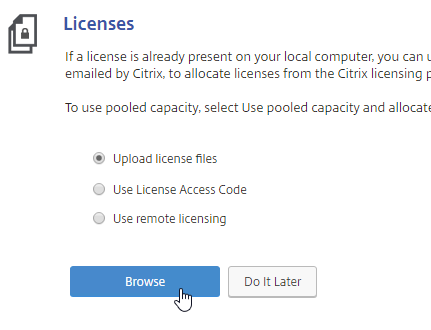
- Browse to the license file, open it, and click Reboot when prompted.
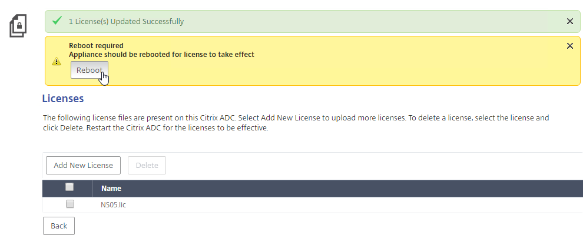
- License files are stored in /nsconfig/license.
- After the reboot and logging in, a box will pop up showing you the installed license, including Days to Expiration (12.0 build 59 and newer).
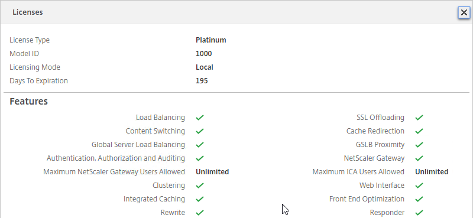
- Also look in the top left corner to make sure it doesn't say NetScaler VPX (1) or ADC VPX (Freemium). The number in the parentheses should match the MPX or VPX model number.
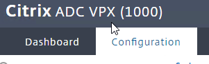
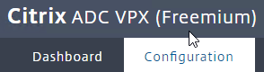
Licensing - VPX Mac Address
To license a NetScaler ADC VPX appliance, you will need its MAC address.
- Go to the Configuration tab.
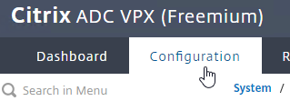
- In the right pane, look down for the Host Id field. This is the MAC address you need for license allocation.
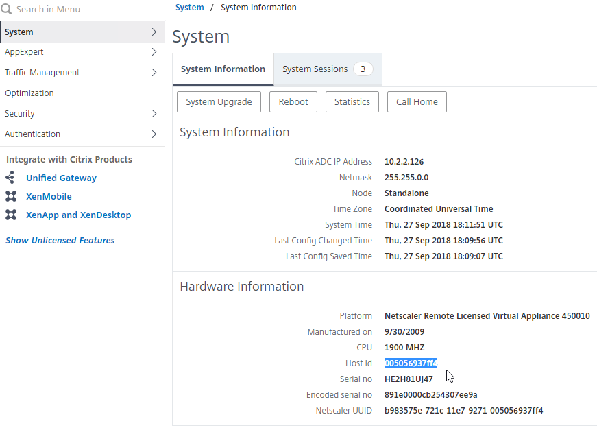
- Another option is to SSH to the appliance and run
shell. - Then run
lmutil lmhostid. The MAC address is returned.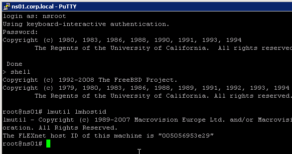
Licensing - Citrix.com
- Login to http://mycitrix.com.
- On the left, click All Licensing Tools.
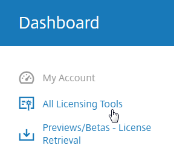
- On the top right, in the horizontal menu, click Activate and Allocate Licenses.
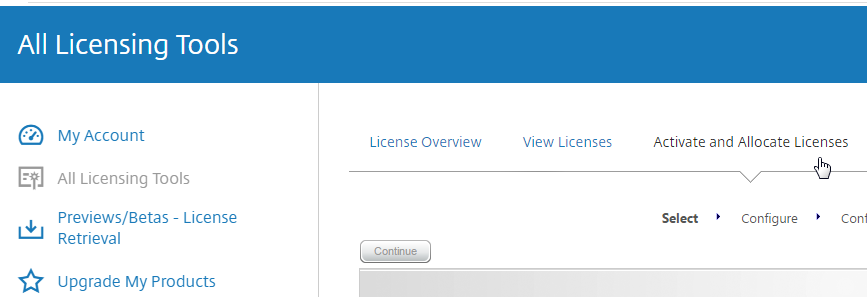
-
If you are activating an eval license, click Don't see your product near the top, and enter the eval license key.
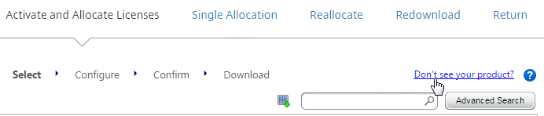
-
Otherwise, check the box next to a Citrix NetScaler VPX or MPX license, and click Continue.
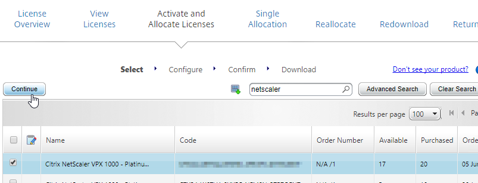
- If this is a NetScaler ADC MPX license then there is no need to enter a host ID for this license. so just click Continue.
- If this is a NetScaler ADC VPX license, enter the VPX MAC address into the Host ID field. It's not obvious, but you can enter text in this drop-down field.
- If you have more than one VPX license, change the Quantity field to 1, and then click Continue.
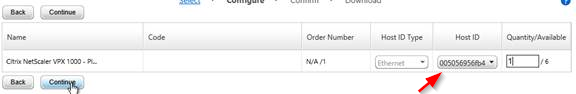
- For a VPX appliance, you can get the Host ID by looking at the System Information page. Click the System node to see this page.
- Click Confirm.
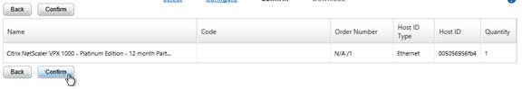
- Click OK when asked to download the license file.
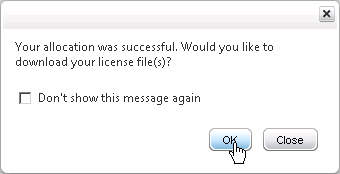
- Click Download.
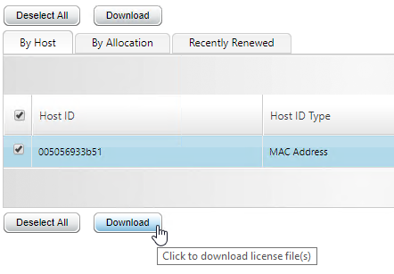
- Click Save and put it somewhere where you can get to it later.
- For NetScaler Standard Edition or higher, at least 500 NetScaler Gateway Universal Licenses are already included in your NetScaler platform license. NetScaler Standard comes with 500 Gateway Universal, NetScaler Enterprise comes with 1,000 Gateway Universal, and NetScaler Platinum comes with unlimited Gateway Universal.
- Note: NetScaler Gateway Enterprise Edition VPX does not come with any Gateway Universal Licenses.
- If you need more Gateway Universal licenses on your NetScaler, you can allocate them now. These licenses can come from XenMobile Enterprise, XenApp/XenDesktop Platinum Edition, NetScaler Platinum Edition, or a la carte.
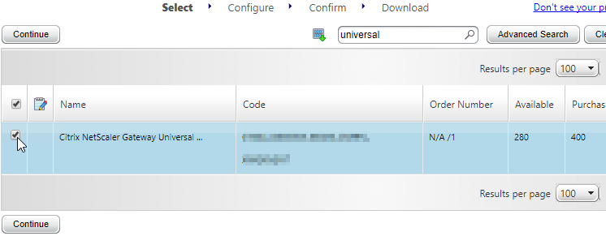
- Enter your appliance hostname (not Mac address) as the Host ID for all licenses. If you have two appliances in a HA pair, allocate these licenses to the first appliance hostname, then reallocate them to the second appliance hostname.
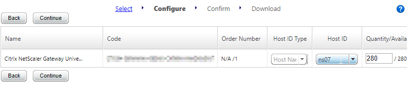
- Click Confirm.
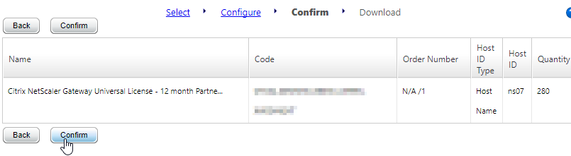
- Click OK when prompted to download your license file.
- Click Download.
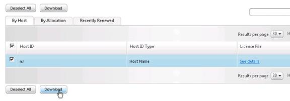
- Click Save.
- If you have two appliances in a High Availability pair with different hostnames then you will need to return the NetScaler Gateway Universal licenses, and reallocate them to the other hostname. The top right horizontal menu bar has a Reallocate option.
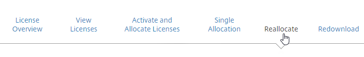
Install Licenses on Appliance
If you haven't already installed licenses on your appliance, then do the following:
- In the NetScaler Configuration GUI, on the left, expand System, and click Licenses.
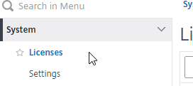
- On the top right, click Manage Licenses.
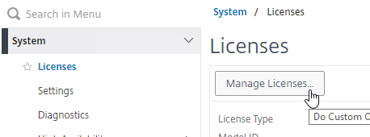
- Click Add New License.
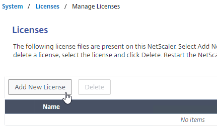
- If you have a license file, select Upload license files, and then click Browse. Select the license file, and click Open.
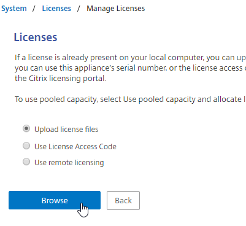
- License files are stored in
/nsconfig/license.
- License files are stored in
- Click Reboot when prompted. Login after the reboot.
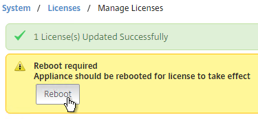
- After rebooting and logging in, a window will appear showing the installed license.
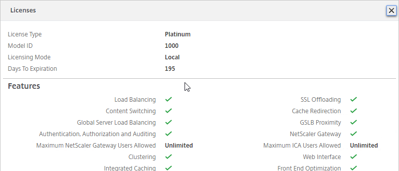
- Notice that Maximum ICA Users Allowed is set to Unlimited.
- Maximum NetScaler Gateway Users Allowed will vary depending on your NetScaler Edition.
- Days to Expiration is shown in 12.0 build 59 and newer.
- Note: the NetScaler SNMP counter allnic_tot_rx_mbits must remain less than the licensed bandwidth or packets will drop.
VPX 100% CPU
NetScaler 12 packet engine consumes 100% of the hypervisor CPU. VPX 200 and lower only have one packet engine, so it's probably consuming around 50% CPU.
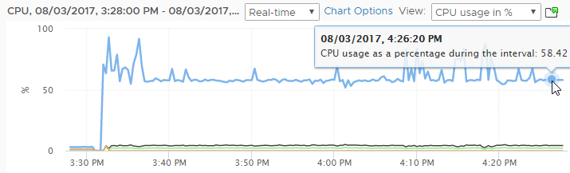
You can change this behavior by doing the following:
- On the left, go to System > Settings.
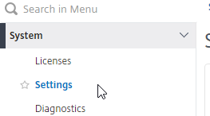
- On the right, in the bottom of the second column, click Change VPX Configuration Settings.
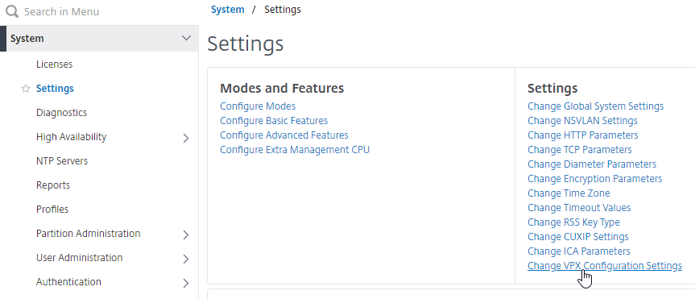
- Change the CPU Yield drop-down to YES, and click OK.
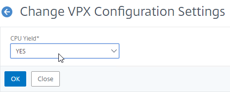
- After making this change, you can see an immediate drop-off in CPU consumption.
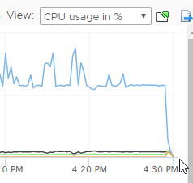
Upgrade Firmware
Citrix CTX241500 Citrix ADC Firmware Release Cycle:
- Versions that end in x.1 (e.g 11.1, 12.1, 13.1, 14.1 etc.) get three years of maintenance releases after one year of feature releases (new features).
- Versions that end in x.0 (e.g 12.0, 13.0, 14.0, etc.) get one year of maintenance releases after one year of feature releases (new features).
Citrix CTX220371 Must Read Articles Before and After Upgrading NetScaler
NetScaler MAS can upgrade firmware. With MAS, the firmware upgrade can be scheduled. For more details, see Creating Maintenance Tasks at Citrix Docs. MAS does a precheck to make sure there are no upgrade issues.
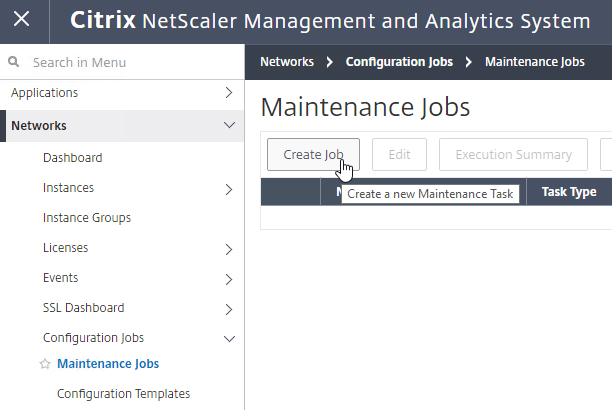
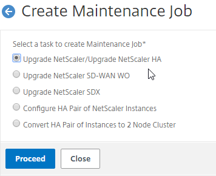
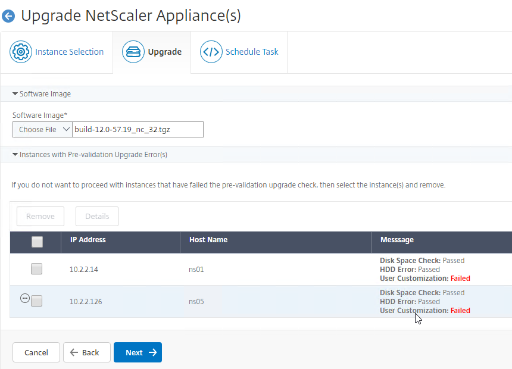
To upgrade firmware using the NetScaler management utility (source = Citrix CTX127455 How to Upgrade Software of the NetScaler Appliances in a High Availability Setup):
- Download firmware. Ask your Citrix Partner or Citrix Support TRM for recommended versions and builds. 12.0 is End of Maintenance soon so you'll want 12.1 instead. You want the Build, not the VPX. Note: Firmware for Citrix Gateway is identical to firmware for Citrix ADC.
- Watch the Security Bulletins to determine which versions and builds resolve security issues. You can subscribe to the Security Bulletins at http://support.citrix.com by clicking the Alerts (bell) link on the top right after logging in.
- Make sure you Save the config before beginning the upgrade. Doing the save on the primary will cause both nodes to save their configs.
- Transferring the firmware upgrade file to the appliance will be slow unless you license the appliance first. An unlicensed appliance will reduce the maximum speed to 1 Mbps.
- When upgrading from 10.5 or older, make sure the NetScaler Gateway Theme is set to Default or Green Bubbles. After the upgrade, you'll have to create a new Portal Theme and bind it to the Gateway vServers.
- Start with the Secondary appliance.
- Before upgrading the appliance, consider using WinSCP or similar to back up the /flash/nsconfig directory.
- Disk Cleanup - VPXs usually don't have enough free space to perform the upgrade.
-
If you SSH to the appliance, run
**shell**, run**cd /var**, then you can run the following command to see disk space consumption sorted by highest:- /var/nsinstall has old firmware upgrades that can be deleted. - A common consumer of disk disk is the counter files located in /var/nslog. - Check /var/netscaler/nsbackup for old backup files. 8. In the NetScaler GUI, with the top left node System selected, on the right, click System Upgrade. 9. Click Choose File, and browse to the build…tgz file. If you haven’t downloaded firmware yet, then you can click the Download Firmware link. 10. Click Upgrade. 11. The firmware will upload. 12. You should eventually see a System Upgrade window with text in it. Click Close when you see the line indicating that a reboot is required. 13. Go back to the System node. On the right, click the Reboot button. 14. Click OK to reboot. 15. After the reboot, after you login, you can see the firmware version by clicking your name on the top right of the browser window. 16. Once the Secondary is done, failover the pair. 17. Then upgrade the firmware on the former Primary.
-
To install firmware by using the command-line interface
- To upload the software to the NetScaler Gateway, use a secure FTP client (e.g. WinSCP) to connect to the appliance.
- Create a version directory under
/var/nsinstall(e.g. /var/nsinstall/12.0.51.24). - Copy the software from your computer to the
/var/nsinstall/<version>(e.g. /var/nsinstall/12.0.51.24) directory on the appliance. - Open a Secure Shell (SSH) client (e.g. Putty) to open an SSH connection to the appliance.
- At a command prompt, type
shell. - At a command prompt, type
cd /var/nsinstall/<version>to change to the nsinstall directory. - To view the contents of the directory, type
ls. - To unpack the software, type
tar -xvzf build_X_XX.tgz, wherebuild_X_XX.tgzis the name of the build to which you want to upgrade. - To start the installation, at a command prompt, type
./installns. - When the installation is complete, restart NetScaler.
- When the NetScaler restarts, at a command prompt type
whatorshow versionto verify successful installation.
High Availability
Configure High Availability as soon as possible so almost all configurations are synchronized across the two appliances. The synchronization exceptions are mainly network interface configurations (e.g. LACP).
High Availability will also sync files between the two appliances. See CTX138748 File Synchronization in NetScaler High Availability Setup for more information.
- Prepare the secondary appliance:
- Configure a NSIP.
- Don’t configure a SNIP. In Step 2, Subnet IP Address, you can click Do It Later to skip the wizard. You'll get the SNIP later when you pair it.
- Configure Hostname and Time Zone.
- Don't configure DNS since you'll get those addresses when you pair it.
- License the secondary appliance.
- Upgrade firmware on the secondary appliance. The firmware of both nodes must be identical.
-
On the secondary appliance, go to System > High Availability > Nodes. Your build might not have the Nodes node.
- On the right, edit the local node.
-
Change High Availability Status to STAY SECONDARY. If you don't do this then you run the risk of losing your config when you pair the appliances.
-
On the primary appliance, on the left, expand System, expand Network, and click Interfaces.
- On the right, look for any interface that is currently DOWN.
-
You need to disable those disconnected interfaces before enabling High Availability. Right-click the disconnected interface, and click Disable. Repeat for the remaining disconnected interfaces.
-
On the left, expand System, expand High Availability, and click Nodes. Your build of NetScaler might not have a Nodes node.
- On the right, edit node 0.
- Change the High Availability Status to STAY PRIMARY, and click OK.
-
On the right, click Add.
- Enter the other NetScaler’s IP address.
-
Enter the other NetScaler’s login credentials, and click Create.
Note: this CLI command must be run separately on each appliance.
-
If you click the refresh icon near the top right, Synchronization State will probably say IN PROGRESS.
- Eventually it will say SUCCESS.
-
Edit Node ID 0 (the local appliance).
- Change High Availability State back to ENABLED.
-
Under Fail-safe Mode, check the box next to Maintain one primary node even when both nodes are unhealthy. Scroll down, and click OK.
-
If you login to the Secondary appliance, you might see a message warning you against making changes. Always apply changes to the Primary appliance.
- On the secondary appliance, go to System > High Availability > Nodes and edit the local node 0.
- Change it from STAY SECONDARY to ENABLED. Also enable Fail-safe Mode. Click OK.
- On the new secondary appliance, go to System > Network > Routes, and make sure you don't have two 0.0.0.0/0.0.0.0 routes. Joining an appliance to an HA pair causes the default route on the primary appliance to sync to the secondary appliance. But, it doesn't delete the default gateway that was formerly configured on the secondary appliance.
- From the NetScaler CLI (SSH), run "sh ha node" to see the status. You should see heartbeats on all interfaces. If not, configure VLANs as detailed later..
- You can also disable HA heartbeats on specific network interfaces (System > Network > Interfaces).
- Note: Make sure HA heartbeats are enabled on at least one interface/channel.
- Note: this is an interface configuration, so this configuration change is not propagated to the other node.
-
You can force failover of the primary appliance by going to System > High Availability > Nodes, opening the Actions menu, and clicking Force Failover.
-
If your firewall (e.g. Cisco ASA) doesn’t like Gratuitous ARP, see CTX112701 - The Firewall Does not Update the Address Resolution Protocol Table
Port Channels on Physical NetScaler MPX
If you are configuring a NetScaler MPX (physical appliance), and if you plugged in multiple cables, and if more than one of those cables is configured on the switch for the same VLAN(s), then you must bond the interfaces together by configuring a Port Channel.
- On the switch, create a Port Channel, preferably with LACP enabled.
- The Port Channel can be an Access Port (one VLAN), or a Trunk Port (multiple VLANs).
- On the NetScaler, configure LACP on the network interfaces, or create a Channel manually. Both are detailed below.
Also see Webinar: Troubleshooting Common Network Related Issues with NetScaler.
LACP Port Channel
To configure Port Channels on a NetScaler, you can either enable LACP, or you can configure a Channel manually. If your switch is configured for LACP, do the following on NetScaler to enable LACP on the member interfaces.
- Go to System > Network > Interfaces.
- On the right, edit one of the Port Channel member interfaces.
- Scroll down.
- Check the box next to Enable LACP.
- In the LACP Key field, enter a number. The number you enter here becomes the channel number. For example, if you enter 1, NetScaler creates a Channel named LA/1. All member interfaces of the same Port Channel must have the same LACP Key. Click OK when done.
- Continue enabling LACP on member interfaces and specifying the key (channel number). If you are connected to two port channels, one set of member interfaces should have LACP Key 1, while the other set of member interfaces should have LACP Key 2.
- Note: in an HA pair, you must perform this interface configuration on both nodes. The LACP commands are not propagated across the HA pair.
- If you go to System > Network > Channels.
- You'll see the LACP Channels on the right. These were created automatically.
- If you edit a Channel, there's a LACP Details tab that shows you the member interfaces.
Manual Channel
If your switch ports are not configured for LACP, then you can instead create a Channel manually.
- Go to System > Network > Channels.
- On the right, click Add.
- At the top, choose an unused Channel ID (e.g. LA/1).
- On the bottom, click Add.
- Click the plus icon next to each member interface to move it to the right. Then click Create.
Redundant Interface Set
You can also configure the NetScaler for switch-independent teaming. Create a Channel manually, but select a Channel ID starts with LR instead of LA. This is called Link Redundancy or Redundant Interface Set.
Channel Minimum Throughput
Channels can be configured so that a High Availability failover occurs when the Channel throughput drops below a configured value. For example, if you have four members in a Channel, you might want a High Availability failover to occur when two of the member interfaces fail.
- Go to System > Network > Channels, and edit a Channel.
- Near the top, enter a minimum threshold value in the Throughput field. If the total bonded throughput drops below this level, a High Availability failover will occur.
Trunk Port and High Availability
If you are trunking multiple VLANs across the channel, and if every VLAN is tagged (no native VLAN), then a special configuration is needed to allow High Availability heartbeats across the channel.
- Go to System > Network > VLAN.
- Add a VLAN object.
- Bind the VLAN to a channel or interface. To bind multiple VLANs to a single interface/channel, the VLANs must be tagged.
- Configure one of the VLANs as untagged. Only untag one of them. Which one you untag doesn't matter, except that the same VLAN should be untagged on the other HA node. If your switch doesn't allow untagged packets, don't worry, we'll fix that soon.
- If your switch doesn't allow untagged packets, go to System > Network > Channels, and edit the channel.
- Scroll down. On the Settings tab, set Tag all VLANs to ON. This causes NetScaler to tag all packets, including the VLAN you formerly marked as untagged. This special configuration is necessary to also tag High Availability heartbeat packets.
- Note: in an HA pair, you must perform this Tagall configuration on both nodes. The Tagall command is not propagated across the HA pair.
Common physical interface configuration
Here is a common NetScaler networking configuration for a physical NetScaler MPX that is connected to both internal and DMZ.
Note: If the appliance is connected to both DMZ and internal, then be aware that this configuration essentially bypasses (straddles) the DMZ-to-internal firewall. That's because if a user connects to a public/DMZ VIP, then NetScaler could use an internal SNIP to connect to the internal server: in other words, traffic comes into a DMZ VLAN, but goes out an internal VLAN. A more secure approach is to have different appliances for internal and DMZ. Or use NetScaler SDX, partitioning, or traffic domains.
- 0/1 connected to a dedicated management network. NSIP is on this network.
- 0/1 is not optimized for high throughput so don't put data traffic on this interface. If you don't have a dedicated management network, then put your NSIP on one of the other interfaces (1/1, 10/1, LA/1, etc.) and don't connect any cables to 0/1.
- To prevent NetScaler from using this dedicated management interface for outbound data traffic, don't put a SNIP on this management network, and configure the default gateway (route 0.0.0.0) to use a router on a different data network (typically the DMZ VLAN). However, if there's no SNIP on this VLAN, and if the default gateway is on a different network, then there will be asymmetric routing for management traffic, since inbound management traffic goes in 0/1, but reply traffic goes out LA/1 or LA/2. To work around this problem, enable Mac Based Forwarding, or configure Policy Based Routing. Both of these options are detailed in the next section.
- It's easiest if the switch port for this dedicated management interface is an Access Port (untagged). If VLAN tagging is required, then NSVLAN must be configured on the NetScaler.
- 10/1 and 10/2 in a LACP port channel (LA/1) connected to internal VLAN(s). Static routes to internal networks through a router on one of these internal VLANs.
- If only one internal VLAN, configure the switch ports/channel as an Access Port.
- If multiple internal VLANs, configure the switch ports/channel as a Trunk Port. Set one of the VLANs as the channel's Native VLAN so it doesn't have to be tagged.
- If the networking team is unwilling to configure a Native VLAN on the Trunk Port, then NetScaler needs special configuration (tagall) to ensure HA heartbeat packets are tagged.
- 1/1 and 1/2 in a LACP port channel (LA/2) connected to DMZ VLAN(s). The default gateway (route 0.0.0.0) points to a router on a DMZ VLAN so replies can be sent to Internet clients.
- If only one DMZ VLAN, configure the switch ports/channel as an Access Port.
- If multiple DMZ VLANs, configure the switch ports/channel as a Trunk Port. Set one of the VLANs as the channel's Native VLAN so it doesn't have to be tagged.
- If the networking team is unwilling to configure a Native VLAN on the Trunk Port, then NetScaler needs special configuration (tagall) to ensure HA heartbeat packets are tagged.
Dedicated Management Subnet
Dedicated Management Subnet implies that your NetScaler is connected to multiple VLANs. If you have a subnet that is for NSIP only, and don't want to use the NSIP subnet for data traffic, then you'll want to move the default route to a different subnet, which breaks the NSIP. To work around this problem, create a PBR for the NSIP to handle replies from NSIP, and to handle traffic sourced by the NSIP.
Citrix Blog Post Separating NetScaler Management and Data Traffic for DISA STIGs also uses PBRs.
- Go to System > Network > PBRs.
- On the right, click Add.
- Give the PBR a name (e.g. NSIP)
- Set the Next Hop Type drop-down to New.
- In the Next Hop field, enter the router IP address that is on the same network as the NSIP.
- In the Configure IP section, set the first Operation drop-down to \=.
- In the Source IP Low field, enter the NSIP. This causes the PBR to match all traffic with NSIP as the Source IP address.
- In an HA pair, the PBR command applies to both nodes in the pair. To accommodate this, in the Source IP Low field, enter the lower NSIP address. Then in the Source IP High field, enter the higher NSIP address.
- You don't need anything else.
- Scroll down, and click Create.
- To handle DNS traffic sourced by the NSIP, create another PBR by right-clicking the existing one, and clicking Add.
- Change the name to NSIP-DNS or similar.
- Change the Action drop-down to DENY. This prevents the PBR from overriding normal DNS behavior.
- Change the Priority to a lower number than the original PBR. Scroll down.
- In the Configure Protocol section, click the Protocol drop-down, and select UDP (17).
- In the Destination section, change the Operation to \=.
- In the Destination port Low field, enter 53.
- Scroll down, and click Create.
- Make sure the DENY PBR is higher in the list (lower priority number) than the ALLOW PBR.
-
Then open the Action menu, and click Apply.
If you want a floating management IP that is always on the Primary appliance, here's a method of granting management access without adding a SNIP to the management subnet:
- Create a Load Balancing Service on HTTP 80 on IP address 127.0.0.1. You might already have one called AlwaysUp that is used with SSL Redirects. Note: NetScaler doesn't allow creating a Load Balancing service on IP address 127.0.0.1 and port 443 (SSL).
- The IP address you enter is 127.0.0.1. When you view the Load Balancing Service, it shows the local NSIP. After a HA failover, the IP Address will change to the other NSIP.
- Create a Load Balancing Virtual Server using a VIP on the management subnet. Protocol = SSL. Port number = 443.
- Bind the AlwaysUp:80 or loopback:80 service to the Load Balancing Virtual Server. In summary: the front end is 443 SSL, while the LB Service is 80 HTTP.
- Add the new VIP to the PBRs so the replies go out the correct interface.
- You should then be able to point your browser to https://Step2VIP to manage the appliance.
- You can perform the same loopback trick for 22 SSH. Create a Load Balancing Service on TCP 22 on IP address 127.0.0.1.
- Create a Load Balancing Virtual Server using the management VIP specified earlier. Protocol = TCP. Port number = 22.
- Bind the loopback:TCP:22 service to the Load Balancing Virtual Server.
- You should then be able to point your SSH Client to
to manage the appliance. -
CLI Commands for the floating management VIP:
add service AlwaysUp 127.0.0.1 HTTP 80 add service mgmt-SSH 127.0.0.1 TCP 22 add lb vserver mgmt-SSL SSL 10.2.2.128 443 add lb vserver mgmt-SSH TCP 10.2.2.128 22 bind lb vserver mgmt-SSL AlwaysUp bind lb vserver mgmt-SSH mgmt-SSH set ns pbr NSIP-DNS DENY -srcIP = 10.2.2.126-10.2.2.128 -destPort = 53 -nextHop 10.2.2.1 -protocol UDP -priority 5 set ns pbr NSIP ALLOW -srcIP = 10.2.2.126-10.2.2.128 -nextHop 10.2.2.1 apply ns pbrs
Multiple Subnets / Multiple VLANs
Citrix CTX214033 Networking and VLAN Best Practices for NetScaler discusses many of the same topics detailed in this section.
If this is a physical MPX appliance, see the previous Port Channel section first.
If you only connected NetScaler to one subnet (one VLAN) then skip ahead to DNS servers.
Configuration Overview
The general configuration process for multiple subnets is this:
- Create a SNIP for each subnet/VLAN.
- Create a VLAN object for each subnet/VLAN.
- Bind the VLAN object to the SNIP for the subnet.
- Bind the VLAN object to the Port Channel or single interface that is configured for the VLAN/subnet.
SNIPs for each VLAN
You will need one SNIP for each connected subnet/VLAN. VLAN objects (tagged or untagged) bind the SNIPs to particular interfaces. NetScaler uses the SNIP's subnet mask to assign IP addresses to particular interfaces.
NSIP Subnet
The NSIP subnet is special, so you won't be able to bind it to a VLAN. Use the following SNIP/VLAN method for any network that does not have the NSIP. The remaining interfaces will be in VLAN 1, which is the VLAN that the NSIP is in. VLAN 1 is only locally significant so it doesn't matter if the switch is configured with it or not. Just make sure the switch has a native VLAN configured, or configure the interface as an access port. If you require trunking of every VLAN, including the NSIP VLAN, then additional configuration is required (NSVLAN or Tagall).
Configure Subnets/VLANs
To configure NetScaler with multiple connected subnets:
- Add a subnet IP for every network the NetScaler is connected to, except the dedicated management network. Expand System, expand Network, and click IPs.
-
On the right, click Add.
- Enter the Subnet IP Address for this network/subnet. The SNIP will be the source IP address the NetScaler will use when communicating with any other service/server on this network. The Subnet IP is also known as the Interface IP for the network. You will need a separate SNIP for each connected network (VLAN).
- Enter the netmask for this network.
-
Ensure the IP Type is set to Subnet IP. Scroll down.
-
Under Application Access Controls, decide if you want to enable GUI management on this SNIP. This feature can be particularly useful for High Availability pairs, because when you point your browser to the SNIP, only the primary appliance will respond. However, enabling management access on the SNIP can be a security risk, especially if this is a SNIP for a DMZ network.
-
Click Create when done. Continue adding SNIPs for each connected network (VLAN).
-
On the left, expand System, expand Network, and click VLANs.
-
On the right, click Add.
- Enter a descriptive VLAN ID. The actual VLAN ID only matters if you intend to tag the traffic. If not tagged, then any ID (except 1) will work.
- Check the box next to one physical interface or channel (e.g. LA/1) that is connected to the network.
- If this is a trunk port, select Tagged if the switch port/channel is expecting the VLAN to be tagged.
- If your switches do not allow untagged packets, then you will need to use the tagall interface option to tag NetScaler High Availability heartbeat packets. See CTX122921 Citrix NetScaler Interface Tagging and Flow of High Availability Packets
- If you don't tag the VLAN, then the NetScaler interface/channel is removed from VLAN 1, and instead put in this VLAN ID.
- Switch to the IP Bindings tab.
-
Check the box next to the Subnet IP for this network. This lets NetScaler know which interface is used for which IP subnet. Click Create when done.
-
On the left, expand System, expand Network, and click Routes.
-
On the right, click Add.
- Internal networks are usually only accessible through an internal router. Add a static routes to the internal networks
- Make sure NULL Route is set to No.
- Set the Gateway (next hop) to an internal router.
-
Then click Create.
add route 10.2.0.0 255.255.0.0 10.2.2.1
-
The default route should be changed to use a router on the DMZ network (towards the Internet). Before deleting the existing default route, either enable Mac Based Forwarding, or create a Policy Based Route, so that the replies from NSIP can reach your machine. You usually only need to do this for dedicated management networks.
- Note: PBR is recommended over MBF, because PBR can handle traffic sourced by NSIP (e.g Syslog traffic), while MBF cannot.
- Mac Based Forwarding sends replies out the same interface they came in on. However, MBF ignores the routing table, and doesn't handle traffic sourced by the NSIP (e.g. LDAP traffic). To enable MBF:
- On the left, expand System, and click Settings.
- On the right, in the left column, click Configure modes.
-
Check the box next to MAC Based Forwarding (MBF), and click OK. More info on MAC Based Forwarding can be found at Citrix CTX1329532 FAQ: Citrix NetScaler MAC Based Forwarding (MBF).
-
Go back to System > Network > Routes.
-
On the right, delete the 0.0.0.0 route. Don’t do this unless the NetScaler has a route, PBR, or MBF to the IP address of the machine you are running the browser on.
rm route 0.0.0.0 0.0.0.0 10.2.2.1 -
Then click Add.
- Set the Network to 0.0.0.0, and the Netmask to 0.0.0.0.
- Make sure NULL Route is set to No.
-
Enter the IP address of the DMZ (or data) router, and click Create.
add route 0.0.0.0 0.0.0.0 172.16.1.1
-
DNS Servers
- To configure DNS servers, expand Traffic Management, expand DNS, and click Name Servers.
-
On the right, click Add.
- Enter the IP address of a DNS server, and click Create.
-
Note: The NetScaler must be able ping each of the DNS servers, or they will not be marked as UP. The ping originates from the SNIP.
add dns nameServer 10.2.2.11
-
NetScaler 12 includes DNS Security Options, which are useful if you use this NetScaler to provide DNS services to clients (e.g. DNS Proxy/Load Balancing, GSLB, etc.). You can configure them at Security > DNS Security.
- Additional DNS Security Options are detailed at Mitigating DNS DDoS attacks at Citrix Docs.
NTP Servers
- On the left, expand System, and click NTP Servers.
- On the right, click Add.
-
Enter the IP Address of your NTP Server (or pool.ntp.org), and click Create.
add ntp server pool.ntp.org -
On the right, open the Action menu, and click NTP Synchronization.
-
Select ENABLED, and click OK.
enable ntp sync -
You can click the System node to view the System Time.
- If you need to manually set the time, SSH (Putty) to the NetScaler appliances. Run date to set the time. Run date --help to see the syntax.
- Ntpdate –u pool.ntp.org will cause an immediate NTP time update.
SYSLOG Server
Citrix CTX120609 NetScaler Log Rotation and Configuration Using Newsyslog
The NetScaler will, by default, store a few syslogs on the local appliance. You can create a syslog policy to also send the syslog entries to an external server, like NetScaler Management and Analytics System.
- On the left, expand System, expand Auditing, and click Syslog.
-
On the right, switch to the Servers tab, and click Add.
- Enter a name for the Syslog server.
- You can change Server Type to Server Domain Name, and enter a FQDN.
- Enter the IP Address or FQDN of the SYSLOG server, and 514 as the port.
- Configure the Log Levels you’d like to send to it by clicking CUSTOM - typically select everything except DEBUG.
- Select your desired Time Zone.
- You can optionally enable other logging features.
-
Then click Create.
-
On the right, switch to the Policies tab, and then click Add.
- Give the policy a descriptive name,
- Change the Expression Type selection to Advanced Policy.
- Select the previously created Syslog server.
-
And then click Create.
-
While still on the Policies tab, open the Actions menu, and click Classic Policy Global Bindings or Advanced Policy Global Bindings, depending on which one you chose when creating the Syslog policy.
- Click Add Binding.
- Click where it says Click to select.
- Click the radio button next to the Syslog policy you want to bind, and click Select.
- If you don't select anything in Global Bind Type, then it defaults to SYSTEM_GLOBAL.
- Click Bind.
- Click Close.
-
If you see a blank screen, click the back button.
SNMP – MIB, Traps, and Alarms
- On the left, expand System, and click SNMP.
-
On the right, click Change SNMP MIB.
- Change the fields as desired. Your SNMP tool (e.g. NetScaler Management and Analytics System) will read this information. Click OK.
-
This configuration needs to be repeated on the other node.
-
Expand System, expand SNMP, and click Community.
- On the right, click Add.
-
Specify a community string, and the Permission, and click Create.
-
On the left, under SNMP, click Traps.
- On the right, click Add.
-
Specify a trap destination. The fields will vary for V2 vs V3. Click Create.
-
On the left, under SNMP, click Managers.
- On the right, click Add. Note: if you do not add a manager then the NetScaler will accept SNMP queries from all SNMP Managers on the network.
- Change the selection to Management Network.
-
Specify the IP of the Management Host, and click Create.
-
The Alarms node allows you to enable SNMP Alarms and configure thresholds.
-
You can open an alarm to set thresholds. For example, CPU-USAGE can be set to 90% alarm, and 50% normal, with a Critical severity.
-
You can also configure the MEMORY alarm.
-
From http://www.slideshare.net/masonke/net-scaler-tcpperformancetuningintheaolnetwork: In addition to the usual OIDs, we have found these very useful to warn of potential problems.
- ifTotXoffSent – .1.3.6.1.4.1.5951.4.1.1.54.1.43
- ifnicTxStalls – .1.3.6.1.4.1.5951.4.1.1.54.1.45
- ifErrRxNoBuffs – .1.3.6.1.4.1.5951.4.1.1.54.1.30
- ifErrTxNoNSB – .1.3.6.1.4.1.5951.4.1.1.54.1.31
Call Home
Citrix Blog Post - Protect Your NetScaler From Disaster With Call Home!: If you have a physical NetScaler (MPX or SDX) with an active support contract, you many optionally enable Call Home to automatically notify Citrix Technical Support of hardware and software failures.
Call Home at Citrix Docs has information on how it work.
From the Citrix ADC 12.1 build 49 release notes: CallHome is now enhanced to send Citrix ADC usage metrics to Citrix Insight Services (CIS) periodically. Citrix collects the data to understand how the appliance works and how to improve the product. By default, CallHome sends the metrics once in every 7 days. For more information, see https://docs.citrix.com/en-us/netscaler/12-1/system/configuring-call-home.html.
To enable Call Home:
- On the left, expand System, and click Diagnostics.
- On the right, in the left column, in the Technical Support Tools section, click Call Home.
- Check the box next to Enable Call Home.
- Optionally enter an email address to receive notifications from Citrix Technical Support. Click OK.
- If you go back into Call Home, it should indicate if registration succeeded or failed. Successful registration requires an active support contract.
Change nsroot Password
- If you want to force strong passwords for local accounts, go to System > Settings, and on the right, click Change Global System Settings
- Scroll down to the Password section.
- You can change Strong Password to Enable Local, and also specify a Min Password Length. Click OK.
- Expand System, expand User Administration, and click Users.
- On the right, right-click nsroot, and click Change Password.
-
Specify a new password, and click OK.
TCP, HTTP, SSL, and Security Settings
Citrix Docs Introduction to best practices for Citrix ADC MPX, VPX, and SDX security
Best practice settings:
- On the left, expand System, and click Settings.
-
On the right, in the right column, click Change TCP parameters.
- Check the box for Window scaling (near the top).
-
Scroll down, and check the box for Selective Acknowledgement. Click OK.
-
On the right, click Change HTTP parameters.
-
Under Cookie, change the selection to Version1. This causes NetScaler to set Cookie expiration to a relative time instead of an absolute time.
-
Check the box next to Drop invalid HTTP requests.
-
Scroll down, and click OK.
-
-
From Citrix CTX232321 Recommended TCP Profile Settings for Full Tunnel VPN/ICAProxy from NetScaler Gateway 11.1 Onwards:
- Expand System, and click Profiles.
- On the right, on the TCP Profiles tab, edit the nstcp_default_profile.
- Enable Window Scaling with a factor of 8.
- Set Minimum RTO (in millisec) = 600.
- Set TCP Buffer Size (bytes) = 600000
- Set TCP Send Buffer Size (bytes) = 600000
- Change TCP Flavor = BIC.
- Enable Use Nagle's algorithm.
- Click OK when done.
-
You can run the following command to see statistics on the dropped packets:
-
See CTX209398 Addressing false positives from CBC and MAC vulnerability scans of SSHD to harden SSHD by editing /nsconfig/sshd_config with the following. Then run
kill -HUP `cat /var/run/sshd.pid`to restart SSHD.
Citrix Knowledgebase articles:
- CTX228148 How to Lock Down the NetScaler Management Interfaces with ACLs
- Also see CTP George Spiers How to secure management access to NetScaler and create unique certificates in a highly available setup
- CTX109011 How to Secure SSH Access to the NetScaler Appliance with Public Key Authentication
- CTX127917 How to Configuring the Rate Limiting Feature of a NetScaler Appliance to Mitigate a DDoS Attack
- CTX131681 How to Use NetScaler Appliance to Avoid Layer 7 DDoS Attacks
- CTX209398 Addressing false positives from CBC and MAC vulnerability scans of SSHD
The following security configurations are detailed by Jason Samuel at Mitigating DDoS and brute force attacks against a Citrix Netscaler Access Gateway:
- Maximum logon attempts on NetScaler Gateway Virtual Server
- Rate Limiting for IP.SRC and HTTP.REQ.URL.
- nstcp_default_XA_XD_profile TCP profile on the NetScaler Gateway Virtual Server.
- Syslog logging
- External website monitoring
- Obfuscate the Server header in the HTTP response
- Disable management access on SNIPs
- Change nsroot strong password, use LDAP authentication, audit local accounts
- Don’t enable Enhanced Authentication Feedback
- SSL – disable SSLv3, deny SSL renegotiation, enable ECDHE ciphers, disable RC4 ciphers.
- 2-factor authentication
- NetScaler Management & Analytics System
- Review IPS/IDS & Firewall logs
Management Authentication - LDAP
Load balancing of LDAP servers is strongly recommended. If you bound multiple LDAP servers instead of load balancing them, NetScaler ADC would try each of the LDAP servers, and for incorrect passwords, will lock out the user sooner than expected. But if you instead load balance your LDAP servers, the authentication attempt will only be sent to one of them.
- Expand System, expand Authentication, expand Basic Policies, and then click LDAP.
-
On the right, switch to the Servers tab. Then click Add.
- Enter LDAPS-Corp-Mgmt or similar as the name. If you have multiple domains, you’ll need a separate LDAP Server per domain so make sure you include the domain name. Also, the LDAP policy used for management authentication will be different than the LDAP policy used for NetScaler Gateway.
- Change the selection to Server IP. Enter the VIP of the NetScaler load balancing vServer for LDAP.
- Change the Security Type to SSL.
- Enter 636 as the Port. Scroll down.
- In the Connection Settings section, enter your Active Directory DNS domain name in LDAP format as the Base DN.
- Enter the credentials of the LDAP bind account in userPrincipalName format.
- Check the box next to BindDN Password and enter the password. Click Test Connection. Scroll down.
- In the Other Settings section, use the drop-down next to Server Logon Name Attribute, Group Attribute, and Sub Attribute Name to select the default fields for Active Directory.
- On the right, check the box next to Allow Password Change.
-
It is best to restrict access to only members of a specific group. In the Search Filter field, enter memberOf=
. See the example below: memberOf=CN=NetScaler Administrators,OU=Citrix,DC=corp,DC=localYou can add :1.2.840.113556.1.4.1941: to the query so it searches through nested groups. Without this, users will need to be direct members of the filtered group.
memberOf**:1.2.840.113556.1.4.1941:**=CN=NetScaler Administrators,OU=Citrix,DC=corp,DC=local Citrix 132802 How to Use the ldapsearch Utility on the NetScaler Gateway Enterprise Edition Appliance to Validate a Search Filter
An easy way to get the full distinguished name of the group is through Active Directory Administrative Center. Double-click the group object, and switch to the Extensions page. On the right, switch to the Attribute Editor tab.
Scroll down to distinguishedName, double-click it, and then copy it to the clipboard.
Back on the NetScaler, in the Search Filter field, type in memberOf=, and then paste the Distinguished Name right after the equals sign. Don’t worry about spaces.
-
Scroll down and click More to expand it.
- For Nested Group Extraction, if desired, change the selection to Enabled.
- Set the Group Name Identifier to samAccountName.
- Set Group Search Attribute to --<< New >>--, and enter memberOf.
- Set Group Search Sub-Attribute to --<< New >>--, and enter CN.
- Example of LDAP Nested Group Search Filter Syntax
-
Scroll down, and click Create.
add authentication ldapAction Corp-Mgmt -serverIP 10.2.2.210 -serverPort 636 -ldapBase "dc=corp,dc=local" -ldapBindDn "corp\\ctxsvc" -ldapBindDnPassword Passw0rd -ldapLoginName samaccountname -searchFilter "memberOf=CN=NetScaler Admins,CN=Users,DC=corp,DC=local" -groupAttrName memberOf -subAttributeName CN -secType SSL -passwdChange ENABLED
-
On the left, go to System > Authentication > Advanced Policies > Policy.
-
On the right, click Add.
- Enter the name LDAPS-Corp-Mgmt or similar.
- Change the Action Type drop-down to LDAP.
- Select the previously created LDAPS-Corp-Mgmt server.
- On the bottom, in the Expression area, type in true.
-
Click Create.
-
Click Global Bindings in the right pane.
- Click where it says Click to select.
- Click the radio button next to the newly created LDAP policy, and click Select.
- Click Bind.
-
Click Done.
-
Under System, expand User Administration, and click Groups.
- On the right, click Add.
- In the Group Name field, enter the case sensitive name of the Active Directory group containing the NetScaler administrators.
- In the Command Policies section, click Bind.
- Select the superuser policy, and click Insert.
-
Scroll down, and click Create.
-
To prevent somebody from creating an nsroot account in LDAP (Active Directory) and then using that external nsroot account to login to ADC, disable external authentication on the local nsroot account.
- On the left, go to System > User Administration > Users.
- On the right, edit the nsroot user.
- At the top of the page, in the System User section, click the pencil icon.
- Uncheck the box next to Enable External Authentication and then click Continue.
- Click Save and then click Done.
- If you logout:
- You should be able to login to NetScaler ADC using an Active Directory account.
Management Authentication - Two Factor
Citrix ADC 12.1 build 51 and newer support two factor authentication for management access. The technology is based on nFactor but works in all editions of ADC (no licensing restrictions). Here's a summary of the configuration steps with more detail coming later:
- The first authentication factor must be an Advanced Authentication Policy that is bound globally. Classic Authentication Policies will not work.
- Create a Login Schema to ask for the second factor password (i.e. passcode).
- This Login Schema is for second factor only and has no effect on the first factor. The second factor Login Schema should only ask for a single password prompt. It doesn't appear to be possible to ask for both factors using the same Login Schema.
- Login Schema for the second factor does not use the normal nFactor language files and you instead must hard code the password prompt label for the second factor logon field directly in the Login Schema .xml file.

- Create an Advanced Authentication Server and Policy for the second factor (e.g. RADIUS).
- Create an Authentication Policy Label with Feature Type set to RBA_REQ. This is not the default so make sure you change the Feature Type drop-down field.
- When creating the Policy Label, select the Login Schema for the second factor.
- Bind the second factor Advanced Authentication Policy to the Policy Label.
- Go to Global Bindings for Authentication, edit the existing authentication binding, click Next Factor, and select your new Policy Label. That's it.
Here are detailed configuration instructions for adding a second authentication factor to the management logon page.
- Login Schema XML File:
- Point WinSCP to your ADC appliance.
- Navigate to /nsconfig/loginschema/LoginSchema and download the SingleAuth.xml file.
- Rename the file to MgmtNextFactor.xml or something like that.
- Edit the file.
- Look for the
element with ID of passwd. Then look for the Label and set the Text field to whatever you want displayed on the second password page. Save the file when done. - The Label Text you enter will be shown on the second factor logon page.
- In WinSCP, change the directory to /nsconfig/loginschema, which is one directory up from where you downloaded the file.
- Upload your modified file.
-
RADIUS Authentication Server:
-
Follow the link for instructions to create a RADIUS Server. Only create the Server object. The Policy object will be created later when creating the Authentication Policy Label.
-
-
On the left, go to System > Authentication > Advanced Policies > Policy Label.
- On the right, click Add.
- Name the Policy Label MgmtNextFactor or similar.
-
In the Login Schema field, click Add.
- Name the Login Schema MgmtNextFactor or similar.
- In the Authentication Schema field, click the pencil icon.
- On the left, select the Login Schema .xml file you uploaded earlier.
- On the top right, click the blue Select button. Do NOT click Create on the bottom left until you've clicked this Select button.
-
The window collapses showing you the Login Schema file that you selected. Now you can click Create.
-
Back in the Authentication Policy Label screen, notice that you can edit the Login Schema object from here.
- Change the Feature Type drop-down to RBA_REQ. If you don't do this, then you won't be able to bind this later.
-
Click Continue.
-
In the Policy Label Policy Binding field, click Add.
- Name the Authentication Policy RADIUSMgmt or similar.
- Change the Action Type drop-down to RADIUS.
- Select the RADIUS server that you created earlier. Or you can Add one from here.
-
In the Expression box, enter the word true and then click Create.
-
Back in the Policy Label Policy Binding screen, click Bind.
-
The Authentication Policy Label configuration is complete so click Done.
- On the left, go to System > Authentication > Advanced Policies > Policy.
- On the right, click the Global Bindings button.
-
You should already have an Advanced Authentication Policy bound globally.
add authentication ldapAction LDAPS-Corp-Mgmt -serverIP 10.2.2.11 -serverPort 636 -ldapBase "dc=corp,dc=local" -ldapBindDn ctxsvc@corp.local -ldapBindDnPassword 5054fc33f673bf4c5c6 -encrypted -encryptmethod ENCMTHD_3 -ldapLoginName sAMAccountName -groupAttrName memberOf -subAttributeName cn -secType SSL -passwdChange ENABLED add authentication Policy LDAPS-Corp-Mgmt -rule true -action LDAPS-Corp-Mgmt bind system global LDAPS-Corp-Mgmt -priority 100 -gotoPriorityExpression END -
Right-click your existing global binding and click Edit Binding.
- In the Next Factor field, click where it says Click to select.
- Click the small circle next to your Management Next Factor Policy Label and then click the blue Select button at the top of the page.
-
Back in the Policy Binding screen, click Bind.
-
Click Done to close the Global Authentication Policy Binding screen.
CLI Prompt
- When you connect to the NetScaler CLI prompt, by default, the prompt is just a
>. - You can run
**set cli prompt %u@%h**to make it the same as a UNIX prompt. See Citrix Docs for the cli prompt syntax.
Backup and Restore
- On the left, expand System, and click Backup and Restore.
- On the right, click Backup/Import.
- Give the backup file a name.
- For Level, select Full, and click Backup.
- Once the backup is complete, you can download the file.
For a PowerShell script, see John Billekens Create offline backups of the NetScaler config
To restore:
- If you want to restore the system, and if the backup file is not currently on the appliance, you click the Backup button. Yes, this seems backwards.
- Change the selection to Add.
- Browse Local to the previously downloaded backup file.
- Then click Backup. This uploads the file to the appliance and adds it to the list of backup files.
- Now you can select the backup, and click Restore.